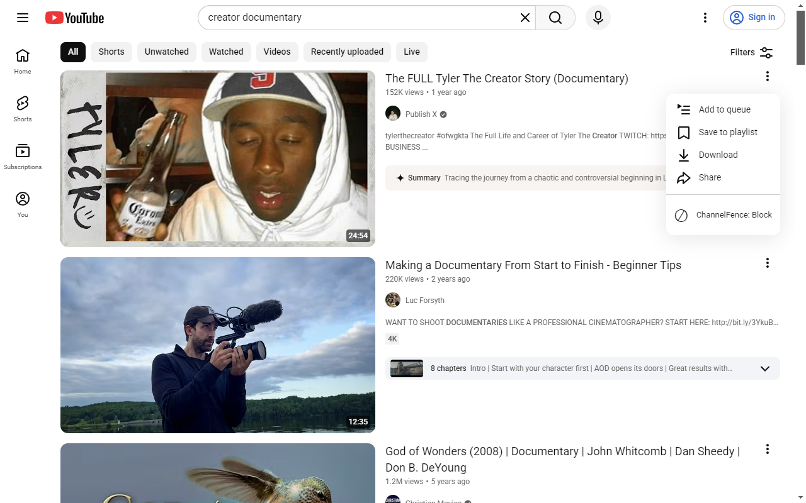
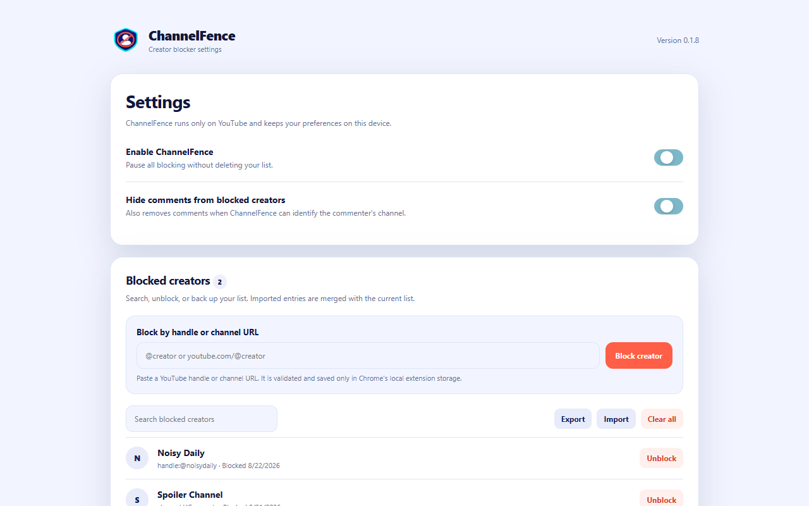

Block in one click
Use the button beside a creator or the ChannelFence action in a video's three-dot menu.
Free, open source, and private
ChannelFence adds a real creator block list to Chrome. Block once to hide matching videos, Shorts, recommendations, comments, and supported direct visits.
No account. No analytics. No ads. Your block list stays in Chrome.

Use the button beside a creator or the ChannelFence action in a video's three-dot menu.
Paste a YouTube handle or channel URL into settings to build your block list directly.
Filter supported Home, search, Watch Next, Shorts, playlists, comments, and direct pages.
Why ChannelFence?
YouTube's "Don't recommend channel" option is a recommendation preference. ChannelFence is for people who want an explicit block list they can view, edit, back up, and apply across supported YouTube surfaces.
How it works

Privacy by design
ChannelFence uses only Chrome's local storage permission. It has no account system, analytics, advertising, remote code, or external server. Its source and automated tests are public.
Questions
Install ChannelFence, then click its ⊘ button beside the creator or choose ChannelFence: Block from a video's three-dot menu. You can also paste the creator's handle or channel URL in settings.
No. The list and settings remain in Chrome's local extension storage and are not sent to the developer or third parties.
No. ChannelFence is an independent open-source extension and is not affiliated with, endorsed by, or sponsored by Google LLC.
Install ChannelFence for free, or inspect every line on GitHub.